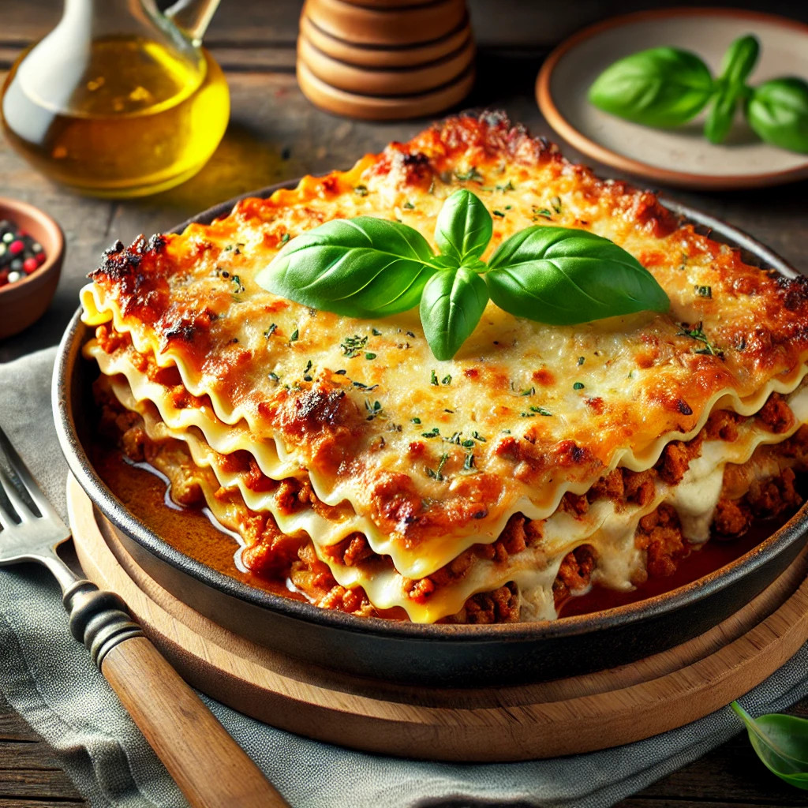

Classic Lasagna
Ingredients
- 2 onions
- 2 garlic cloves
- 500 g minced meat
- 1 tbsp oil
- 4 tbsp tomato purée
- 1 tsp dried thyme
- 1 tsp dried rosemary
- 390 g crushed tomatoes
- 1 beef bouillon cube
- Salt
- Pepper
- 9 dried lasagna sheets
Sauce
- 6 tbsp butter
- 6 tbsp flour
- 1 liter milk
- 2 dl grated Parmesan cheese
How to do it
- Preheat the oven to 175°C (347°F).
- Peel and chop the onion and garlic. Sauté the ground meat, onion, and garlic in oil in a frying pan. Add the tomato paste and let it cook with the meat. Season with thyme and rosemary. Add the crushed tomatoes and the bouillon cube, then let it simmer for about 10 minutes. Season with salt and pepper to taste.
- Sauce: Melt the butter and stir in the flour. Gradually add the milk while whisking. Let the sauce simmer for about 5 minutes, stirring occasionally. Stir in the Parmesan cheese and season with salt and pepper.
- Layer the sauce, lasagna sheets, and meat sauce in an ovenproof dish (about 20 x 30 cm). Finish with the cheese sauce.
- Place the lasagna in the middle of the oven and bake for about 40 minutes (or follow the cooking time on the lasagna sheet package).
- To serve: Serve the lasagna with a salad.